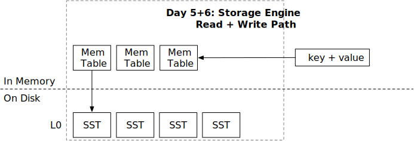

写入路径

在本章中，您将：
- 使用 L0 刷新实现 LSM 写入路径。
- 实现正确更新 LSM 状态的逻辑。
要将测试用例复制到启动代码并运行它们，
cargo x copy-test --week 1 --day 6
cargo x scheck
任务 1：将 Memtable 刷新到 SST
此时，我们已经准备好了所有内存中的结构和磁盘文件，存储引擎能够从这些结构中读取和合并数据。现在，我们将实现将数据从内存移动到磁盘（即所谓的刷新）的逻辑，并完成 Mini-LSM 第一周的教程。
在本任务中，您需要修改：
src/lsm_storage.rs
src/mem_table.rs
您需要修改 LSMStorageInner::force_flush_next_imm_memtable 和 MemTable::flush。在 LSMStorageInner::open 中，如果 LSM 数据库目录不存在，您需要创建它。要刷新一个 memtable 到磁盘，我们需要做三件事：
- 选择一个 memtable 进行刷新。
- 创建一个与 memtable 对应的 SST 文件。
- 从不可变 memtable 列表中移除该 memtable，并将 SST 文件添加到 L0 SST 中。
我们还没有解释什么是 L0（第 0 层）SST。一般来说，它们是直接作为 memtable 刷新结果创建的 SST 文件集合。在本教程的第一周，我们只会在磁盘上有 L0 SST。我们将在第二周深入探讨如何使用分级或分层结构在磁盘上高效组织它们。
请注意，创建 SST 文件是一个计算密集型且成本高昂的操作。我们不想长时间持有 state 读/写锁，因为它可能会阻塞其他操作并在 LSM 操作中产生巨大的延迟峰值。此外，我们使用 state_lock 互斥锁来序列化 LSM 树中的状态修改操作。在本任务中，您需要仔细考虑如何使用这些锁来确保 LSM 状态修改无竞争条件，同时最小化关键部分。
我们没有并发测试用例，您需要仔细考虑您的实现方式。还要记住，不可变 memtable 列表中的最后一个 memtable 是最早的一个，应该是您要刷新的那个。
剧透：L0 刷新伪代码
#![allow(unused)] fn main() { fn flush_l0(&self) { let _state_lock = self.state_lock.lock(); let memtable_to_flush; let snapshot = { let guard = self.state.read(); memtable_to_flush = guard.imm_memtables.last(); }; let sst = memtable_to_flush.flush()?; { let guard = self.state.write(); guard.imm_memtables.pop(); guard.l0_sstables.insert(0, sst); }; } }
任务 2：触发刷新
在本任务中，您需要修改：
src/lsm_storage.rs
src/compact.rs
当内存中 memtable（不可变 + 可变）的数量超过 LSM 存储选项中的 num_memtable_limit 时，您应该将最早的 memtable 刷新到磁盘。这是由后台的刷新线程完成的。刷新线程将与 MiniLSM 结构一起启动。我们已经实现了启动线程和正确停止线程所需的代码。
在本任务中，您需要在 compact.rs 中实现 LsmStorageInner::trigger_flush，在 lsm_storage.rs 中实现 MiniLsm::close。trigger_flush 将每 50 毫秒执行一次。如果 memtable 数量超过限制，您应该调用 force_flush_next_imm_memtable 来刷新一个 memtable。当用户调用 close 函数时，您应该等待刷新线程（以及第二周的压缩线程）完成。
任务 3：过滤 SST
现在您有了一个完全可用的存储引擎，并且可以使用 mini-lsm-cli 与您的存储引擎进行交互。
cargo run --bin mini-lsm-cli -- --compaction none
然后，
fill 1000 3000
get 2333
flush
fill 1000 3030
get 2333
flush
get 2333
scan 2000 2333
如果您填充更多数据，您可以看到您的刷新线程正在工作，并自动刷新 L0 SST，而无需使用 flush 命令。
最后，让我们在结束本周之前，在过滤 SST 上实现一个简单的优化。根据用户提供的键范围，我们可以轻松过滤掉一些不包含该键范围的 SST，这样我们就不需要在合并迭代器中读取它们。
在本任务中，您需要修改：
src/lsm_storage.rs
src/iterators/*
src/lsm_iterator.rs
您需要更改读取路径函数，以跳过不可能包含键/键范围的 SST。您需要为您的迭代器实现 num_active_iterators，以便测试用例可以检查您的实现是否正确。对于 MergeIterator 和 TwoMergeIterator，它是所有子迭代器的 num_active_iterators 的总和。请注意，如果您没有修改 MergeIterator 启动代码中的字段，还要考虑 MergeIterator::current。对于 LsmIterator 和 FusedIterator，只需从内部迭代器返回活动迭代器的数量。
您可以实现像 range_overlap 和 key_within 这样的辅助函数来简化您的代码。
测试您的理解
- 如果用户请求删除一个键两次会发生什么？
- 当迭代器初始化时，会有多少内存（或块数）被加载到内存中？
- 一些疯狂的用户想要分叉他们的 LSM 树。他们希望启动引擎来摄取一些数据，然后分叉它，以便获得两个相同的数据集，然后分别操作它们。一个简单但效率不高的实现方法是简单地将所有 SST 和内存结构复制到一个新目录并启动引擎。然而，请注意，我们从不修改磁盘文件，实际上可以重用父引擎的 SST 文件。您认为如何在不复制数据的情况下高效实现这个分叉功能？（查看 Neon 分支）。
- 想象一下，您正在构建一个多租户 LSM 系统，在单个 128GB 内存机器上托管 10k 个数据库。Memtable 大小限制设置为 256MB。对于这个设置，您需要多少内存用于 memtable？
- 显然，您没有足够的内存来容纳所有这些 memtable。假设每个用户仍然有自己的 memtable，您如何设计 memtable 刷新策略以使其工作？让所有这些用户共享同一个 memtable（即将租户 ID 编码为键前缀）是否有意义？
我们没有提供这些问题的参考答案，欢迎在 Discord 社区中讨论。
额外任务
- 实现写入/L0 停滞。 当 memtable 数量超过最大数量太多时，您可以阻止用户向存储引擎写入数据。您还可以在实现压缩后在第二周为 L0 表实现写入停滞。
- 前缀扫描。 您可以通过实现前缀扫描接口并使用前缀信息来过滤更多 SST。
我们非常欢迎您的反馈。欢迎加入我们的Discord社区。发现问题？请在github.com/skyzh/mini-lsm上创建问题/拉取请求。版权所有 © 2022 - 2024 Alex Chi Z. 保留所有权利。